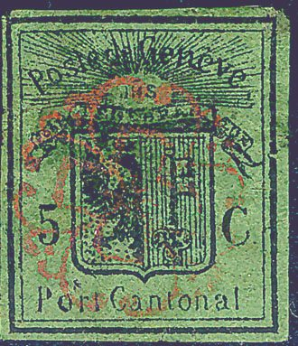
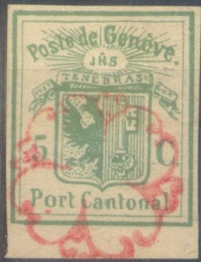
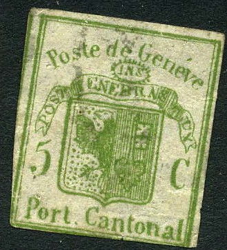
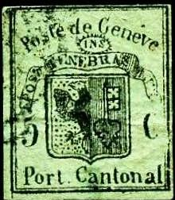

{kind=link}



{kind=link}

Return To Catalogue - Geneva forgeries, part 1 - Geneva forgeries, part 3 - Geneva forgeries, part 4 Fournier forgeries of the large stamps - Geneva (Switzerland) - Switzerland overview
Note: on my website many of the
pictures can not be seen! They are of course present in the
catalogue;
contact me if you want to purchase the catalogue.
Many forgeries exist of the stamps of Geneva, in the early 20th century already 15 forgeries of the double stamp and 34(!) forgeries existed imitating the larger stamps and the envelope (according to Album Weeds), they even exist printed on genuine paper obtained from the envelopes.

Green and black on green forgery made by the same forger.


(With 'FACSIMILE' overprint, they might be Champion
forgeries. )


A forgery with no dots behind the eagle


 
Two forgeries made by the same forger. The wing of the eagle is
deformed, the 'C' of 'Cantonal' is placed too high.
Geneva forgeries, part 3
Geneva forgeries, part 4 Fournier
forgeries of the large stamps
{kind=link}
{kind=link}